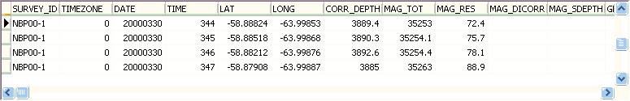
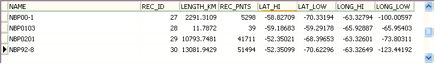

Magnetic Anomaly Data
|
Magnetic anomalies,
from
https://www.ncei.noaa.gov/maps/geophysics/
- Download in MGD77T Tab-Delimited Format.
If you have a large area, the
single file option may be too
big to load into Excel.
- Open in
Excel, save as CSV (currently problem with
direct
MD import; may also have to fix
missing dates; you can also remove
unwanted fields to make the file
smaller)
- Open CSV file in MD to create a point database

-
Create area/line shape file from points
-
Set file name
-
No to area to
get line
-
Yes to 3D,
pick the MAG_RES
for the z
component,
There are issues
with some
cruises, with
MAG_TOT and
MAG_RES flipped.
You could also
consider using
MAG_DICORR,
although that is
missing for many
cruises.
-
Yes to Multiple
records, pick
SURVEY_ID to be
the splitting
field, and the
name for the
-
Leave the
thinning factor
at 1.
|

Edit the lines file to add:
http://www.soest.hawaii.edu/PT/GSFML/ML/index.html
Seton, M., J. Whittaker, P. Wessel, R. D. Muller, C. DeMets, S. Merkouriev,
S. Cande, C. Gaina, G. Eagles, R. Granot, J. Stock, N. Wright, S. Williams,
2014, Community infrastructure and repository for marine magnetic
identifications, Geochemistry, Geophysics, Geosystems,
DOI:10.1002/2013GC005176
Global Seafloor Fabric
http://www.soest.hawaii.edu/PT/GSFML/SF/index.html
- Matthews, K. J., R. D. Muller, P. Wessel, and J. M. Whittaker (2011), The
tectonic fabric of the ocean basins,
J. Geophys. Res.,
116(B12109),
- Wessel, P., K. J. Matthews, R. D. Muller, A. Mazzoni, J. M. Whittaker,
R. Myhill, and M. T. Chandler (2015), Semiautomatic fracture zone tracking,http://dx.doi.org/10.1002/2015gc005853, Geochemistry,
Geophysics, Geosystems, doi:10.1002/2015GC005853. This article
discusses the Fracture zone tracking software which is available as a GMT
5.2 supplement.
Last revision 1/31/2016